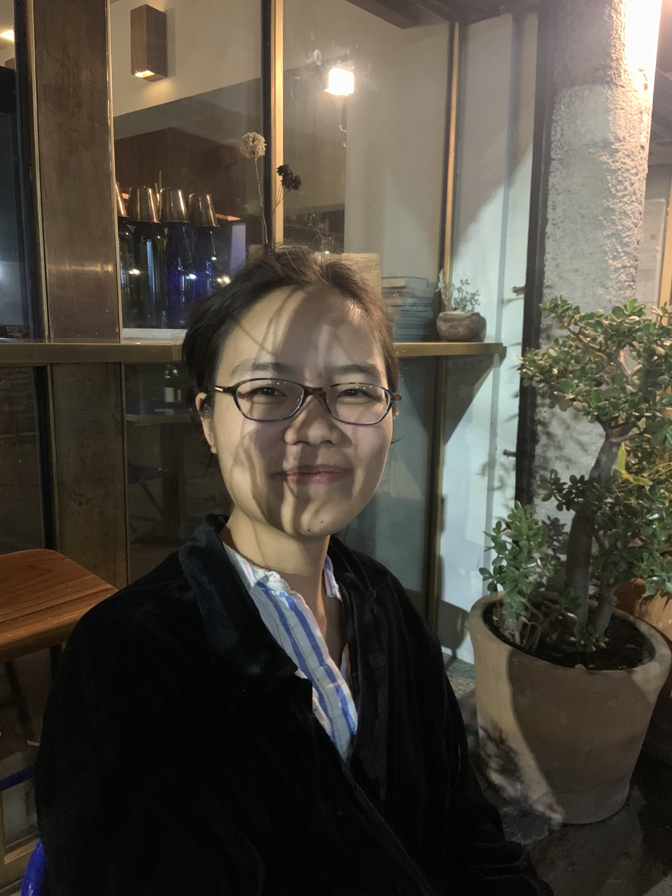

Becky
Zhang
I grew up in Hong Kong and study English and computer science at Pomona College. Currently with The Point, I interned prior at the LA Review of Books, Slate, and Los Angeles Magazine. I also edited Agave Review, the Claremont Colleges literary magazine, for two years. I'm interested in cultural criticism and its dissemination through digital media.
